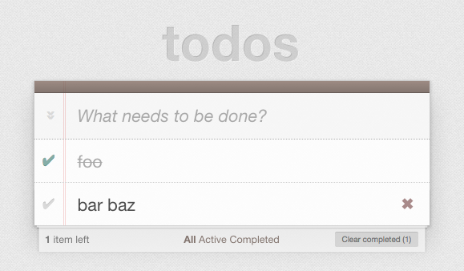
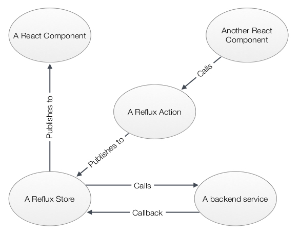
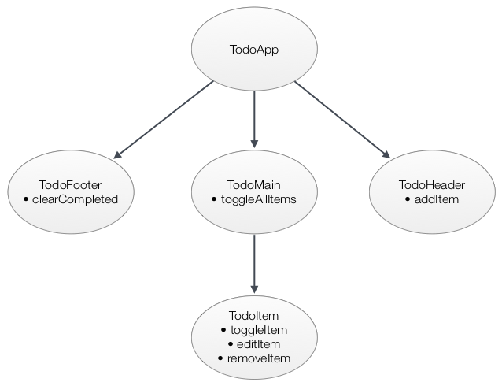

Tags: react reflux case study todomvc
The TodoMVC project
Very likely you're already familiar with TodoMVC, Addy Osmani's project to help comparing JavaScript frameworks. The idea is to code the exact same app in the different frameworks, and since we know the app, it's easier to get an understanding for the framework that was used in the particular code version you're looking at.
For this to work the app itself has to be very simple, and it is:

There is full CRUD for todo items, and some aggregation such as toggling all, clearing all finished items and filtering.
In spite of being simple, however, it turns out that it is still complex enough to enable building an understanding for what the framework in question takes like. Addy made an excellent job to hit that sweet spot, which is most likely the secret behind the popularity of the project.
The Reflux version
To help curious window shoppers check out Reflux, creator Mikael Brassman made a TodoMVC version using Reflux, React and react-router.
This post will walk through the code, although I'll use my own fork which has some modifications which at the time of writing haven't been merged into the official repo.
The Reflux data flow model
As detailed in our post on the Reflux data flow model, Reflux takes a global pubsub approach but negates the bad parts of that by having lots of parallell channel who all transmit just one kind of event.
We used this pucture to illustrate the model:

As we will find, this model holds true for the TodoMVC app as well (apart from it not having a separate database).
Ready, set...
First off - the actions. Since they are in essence a list of all available events in the app, and also serve as the glue between the Store and the components, the action definition is very central to the app. For the TodoMVC app they are located in src/actions.js and look like this:
var TodoActions = Reflux.createActions([
"toggleItem",
"toggleAllItems",
"addItem",
"removeItem",
"clearCompleted",
"editItem"
]);The Store story
A central Store is listening to the actions and will update the todo data. Often by communicating with some kind of database API, as shown in the picture above, but in the Reflux TodoMVC app the Store merely uses localStorage.
Each store should just be concerned with one kind of data, so a larger app commonly consists of many stores. TodoMVC however only deals with todo items, and thus it only contains the one store. Here's the code for that store, located in src/store.js:
// some variables and helpers for our fake database stuff
var todoCounter = 0,
localStorageKey = "todos";
function getItemByKey(list,itemKey){
return _.find(list, function(item) {
return item.key === itemKey;
});
}
var todoListStore = Reflux.createStore({
// this will set up listeners to all publishers in TodoActions, using onKeyname (or keyname) as callbacks
listenables: [TodoActions],
onEditItem: function(itemKey, newLabel) {
var foundItem = getItemByKey(this.list,itemKey);
if (!foundItem) {
return;
}
foundItem.label = newLabel;
this.updateList(this.list);
},
onAddItem: function(label) {
this.updateList([{
key: todoCounter++,
created: new Date(),
isComplete: false,
label: label
}].concat(this.list));
},
onRemoveItem: function(itemKey) {
this.updateList(_.filter(this.list,function(item){
return item.key!==itemKey;
}));
},
onToggleItem: function(itemKey) {
var foundItem = getItemByKey(this.list,itemKey);
if (foundItem) {
foundItem.isComplete = !foundItem.isComplete;
this.updateList(this.list);
}
},
onToggleAllItems: function(checked) {
this.updateList(_.map(this.list, function(item) {
item.isComplete = checked;
return item;
}));
},
onClearCompleted: function() {
this.updateList(_.filter(this.list, function(item) {
return !item.isComplete;
}));
},
// called whenever we change a list. normally this would mean a database API call
updateList: function(list){
localStorage.setItem(localStorageKey, JSON.stringify(list));
// if we used a real database, we would likely do the below in a callback
this.list = list;
this.trigger(list); // sends the updated list to all listening components (TodoApp)
},
// this will be called by all listening components as they register their listeners
getDefaultData: function() {
var loadedList = localStorage.getItem(localStorageKey);
if (!loadedList) {
// If no list is in localstorage, start out with a default one
this.list = [{
key: todoCounter++,
created: new Date(),
isComplete: false,
label: 'Rule the web'
}];
} else {
this.list = _.map(JSON.parse(loadedList), function(item) {
// just resetting the key property for each todo item
item.key = todoCounter++;
return item;
});
}
return this.list;
}
});
Quite a mouthful, but if you bear with it the structure is rather clear! Each action is caught in a callback which changes the data and calls updateList, which in turn stores the new data and triggers it to all listeners.
The initial load from localStorage is done in getDefaultData, which is what all listeners is initially seeded with when they first register their interest.
A component overview
Before we dive into the individual components, here's a high-level look at how they are related, and where the various action calls are located:

As you can see the app is made up from 5 different components, all defined in src/components.jsx.js.
The React router root
However, the app doesn't start with TodoApp, but with a router definition using ReactRouter! This is used to handle the different routes that the app is supposed to contain; the root (showing all todos), completed showing only completed todos, and active showing only those who haven't been completed.
Here's the code, located at the bottom of src/components.jsx.js:
var routes = (
<ReactRouter.Route handler={TodoApp}>
<ReactRouter.Route name="All" path="/" handler={TodoMain} />
<ReactRouter.Route name="Completed" path="/completed" handler={TodoMain} />
<ReactRouter.Route name="Active" path="/active" handler={TodoMain} />
</ReactRouter.Route>
);
ReactRouter.run(routes, function(Handler) {
React.render(<Handler/>, document.getElementById('todoapp'));
});All three routes actually render the same component (TodoMain inside TodoApp), but it will act differently depending on the path.
The TodoApp component
Finally we get to the actual React components! First off TodoApp, which is used as a wrapper for all routes:
// Renders the full application
// RouteHandler will always be TodoMain, but with different 'showing' prop (all/completed/active)
var TodoApp = React.createClass({
// this will cause setState({list:updatedlist}) whenever the store does trigger(updatedlist)
mixins: [Reflux.connect(todoListStore,"list")],
getInitialState: function() {
return {
list: []
};
},
render: function() {
return (
<div>
<TodoHeader />
<ReactRouter.RouteHandler list={this.state.list} />
<TodoFooter list={this.state.list} />
</div>
);
}
});Note that TodoApp is listening to todoListStore. That means it will update its state with whatever todoListStore triggers, which will cause a rerender.
Apart from that there isn't much going on - TodoApp has no user interaction, but merely renders TodoHeader, TodoMain and TodoFooter, passing this.state.list along as a property.
The TodoHeader component
This component renders the top part of the app, including the form which creates new todo items by calling the addItem action.
// Renders the headline and the form for creating new todos.
// Used in TodoApp
// Observe that the toogleall button is NOT rendered here, but in TodoMain (it is then moved up to the header with CSS)
var TodoHeader = React.createClass({
handleValueChange: function(evt) {
var text = evt.target.value;
if (evt.which === 13 && text) { // hit enter, create new item if field isn't empty
TodoActions.addItem(text);
evt.target.value = '';
} else if (evt.which === 27) { // hit escape, clear without creating
evt.target.value = '';
}
},
render: function() {
return (
<header id="header">
<h1>todos</h1>
<input id="new-todo" placeholder="What needs to be done?" autoFocus onKeyUp={this.handleValueChange}/>
</header>
);
}
});Note that the toggleall button, although physically located in the header, is actually defined in TodoMain, and then moved through CSS.
The reason I suspect is that this way TodoHeader doesn't need the todo data at all. Also, if we have no todos at all TodoMain should be hidden as well as the toggleall button, so by making the toggleall button part of TodoMain we don't have to duplicate any hiding logic here.
The TodoFooter component
The TodoFooter component shows aggregation information and controls, as well as the navigation bar.
// Renders the bottom item count, navigation bar and clearallcompleted button
// Used in TodoApp
var TodoFooter = React.createClass({
propTypes: {
list: React.PropTypes.arrayOf(React.PropTypes.object).isRequired,
},
render: function() {
var nbrcompleted = _.filter(this.props.list, "isComplete").length,
nbrtotal = this.props.list.length,
nbrincomplete = nbrtotal-nbrcompleted,
clearButtonClass = React.addons.classSet({hidden: nbrcompleted < 1}),
footerClass = React.addons.classSet({hidden: !nbrtotal }),
completedLabel = "Clear completed (" + nbrcompleted + ")",
itemsLeftLabel = nbrincomplete === 1 ? " item left" : " items left";
return (
<footer id="footer" className={footerClass}>
<span id="todo-count"><strong>{nbrincomplete}</strong>{itemsLeftLabel}</span>
<ul id="filters">
<li>
<ReactRouter.Link activeClassName="selected" to="All">All</ReactRouter.Link>
</li>
<li>
<ReactRouter.Link activeClassName="selected" to="Active">Active</ReactRouter.Link>
</li>
<li>
<ReactRouter.Link activeClassName="selected" to="Completed">Completed</ReactRouter.Link>
</li>
</ul>
<button id="clear-completed" className={clearButtonClass} onClick={TodoActions.clearCompleted}>{completedLabel}</button>
</footer>
);
}
});The TodoMain component
Now finally for the TodoMain component. It renders the previously mentioned toggleall button which is moved through CSS to the header, and also the list of todo items.
// Renders the todo list as well as the toggle all button
// Used in TodoApp
var TodoMain = React.createClass({
mixins: [ ReactRouter.State ],
propTypes: {
list: React.PropTypes.arrayOf(React.PropTypes.object).isRequired,
},
toggleAll: function(evt) {
TodoActions.toggleAllItems(evt.target.checked);
},
render: function() {
var filteredList;
switch(this.getPath()){
case '/completed':
filteredList = _.filter(this.props.list,function(item){ return item.isComplete; });
break;
case '/active':
filteredList = _.filter(this.props.list,function(item){ return !item.isComplete; });
break;
default:
filteredList = this.props.list;
}
var classes = React.addons.classSet({
"hidden": this.props.list.length < 1
});
return (
<section id="main" className={classes}>
<input id="toggle-all" type="checkbox" onChange={this.toggleAll} />
<label htmlFor="toggle-all">Mark all as complete</label>
<ul id="todo-list">
{ filteredList.map(function(item){
return <TodoItem label={item.label} isComplete={item.isComplete} id={item.key} key={item.key}/>;
})}
</ul>
</section>
);
}
});Clicking the toggleall button will cause a call to the toggleAllItems action.
The TodoItem component
The final piece of the puzzle is TodoItem, responsible for displaying a single item in the list. It contains lots of user interactions; toggleItem, editItem and removeItem:
// Renders a single Todo item in the list
// Used in TodoMain
var TodoItem = React.createClass({
propTypes: {
label: React.PropTypes.string.isRequired,
isComplete: React.PropTypes.bool.isRequired,
id: React.PropTypes.number
},
mixins: [React.addons.LinkedStateMixin], // exposes this.linkState used in render
getInitialState: function() {
return {};
},
handleToggle: function(evt) {
TodoActions.toggleItem(this.props.id);
},
handleEditStart: function(evt) {
evt.preventDefault();
// because of linkState call in render, field will get value from this.state.editValue
this.setState({
isEditing: true,
editValue: this.props.label
}, function() {
this.refs.editInput.getDOMNode().focus();
});
},
handleValueChange: function(evt) {
var text = this.state.editValue; // because of the linkState call in render, this is the contents of the field
// we pressed enter, if text isn't empty we blur the field which will cause a save
if (evt.which === 13 && text) {
this.refs.editInput.getDOMNode().blur();
}
// pressed escape. set editing to false before blurring so we won't save
else if (evt.which === 27) {
this.setState({ isEditing: false },function(){
this.refs.editInput.getDOMNode().blur();
});
}
},
handleBlur: function() {
var text = this.state.editValue; // because of the linkState call in render, this is the contents of the field
// unless we're not editing (escape was pressed) or text is empty, save!
if (this.state.isEditing && text) {
TodoActions.editItem(this.props.id, text);
}
// whatever the outcome, if we left the field we're not editing anymore
this.setState({isEditing:false});
},
handleDestroy: function() {
TodoActions.removeItem(this.props.id);
},
render: function() {
var classes = React.addons.classSet({
'completed': this.props.isComplete,
'editing': this.state.isEditing
});
return (
<li className={classes}>
<div className="view">
<input className="toggle" type="checkbox" checked={!!this.props.isComplete} onChange={this.handleToggle} />
<label onDoubleClick={this.handleEditStart}>{this.props.label}</label>
<button className="destroy" onClick={this.handleDestroy}></button>
</div>
<input ref="editInput" className="edit" valueLink={this.linkState('editValue')} onKeyUp={this.handleValueChange} onBlur={this.handleBlur} />
</li>
);
}
});Note how Mikael cleverly keeps the value of the input field as state, and then acts with that state when the field is blurred. If the user pressed escape or the input is empty then nothing happens, otherwise a call to editItem is made.
Comparing to Flux
Now that you've come to know what the Reflux solution to the TodoMVC problem looks like, take a look at the Flux version. You'll find that even though it has the same React advantage, the code base is much more opaque.
We've also done a more direct comparison between Flux and Reflux here on this blog, should you need more convincing.
Wrapping up
I hope the Reflux TodoMVC app and this walkthrough showcased the strengths of the Reflux approach. I've really come to love React, but it was only when I paired it with Reflux - and ReactRouter and Firebase - that things took off for real.
Intellectually I realise that I'm probably just infatuated as usual by the latest shiny toy, but I'll say it anyway: I can see myself working on this stack for a long time to come!